referência visual canônica do Atom OS — V1 MindRoot
"Rick não quer ser mais produtivo. Quer ser mais presente. Os sistemas são o meio — a presença é o fim."
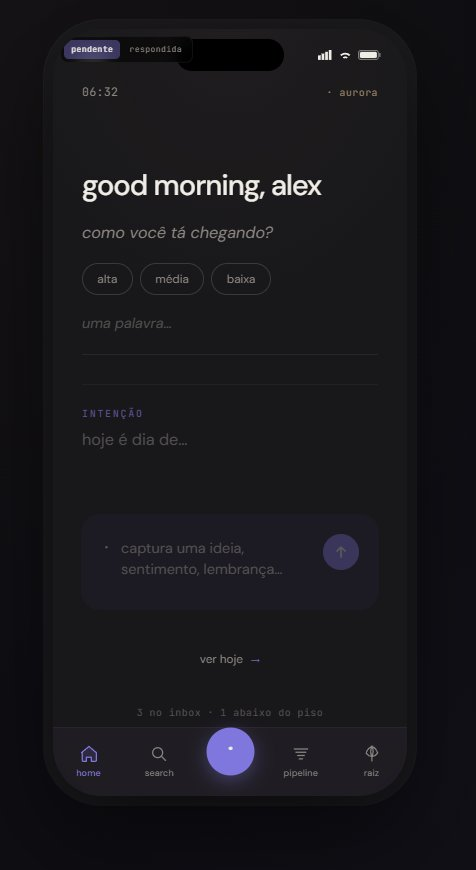
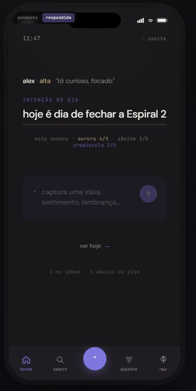
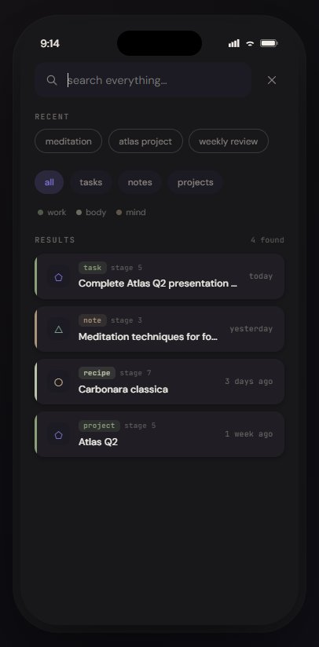
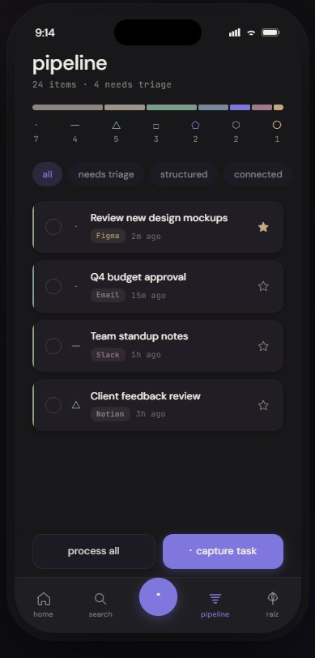
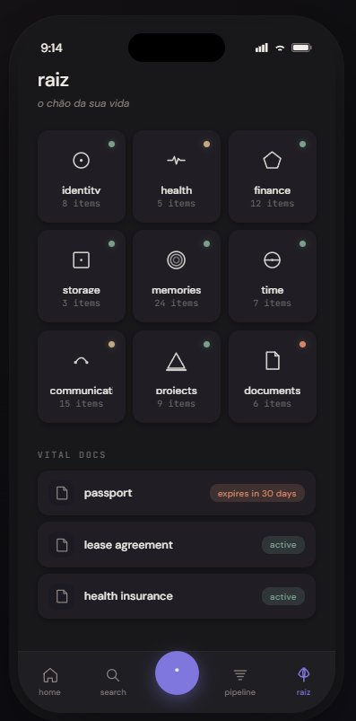
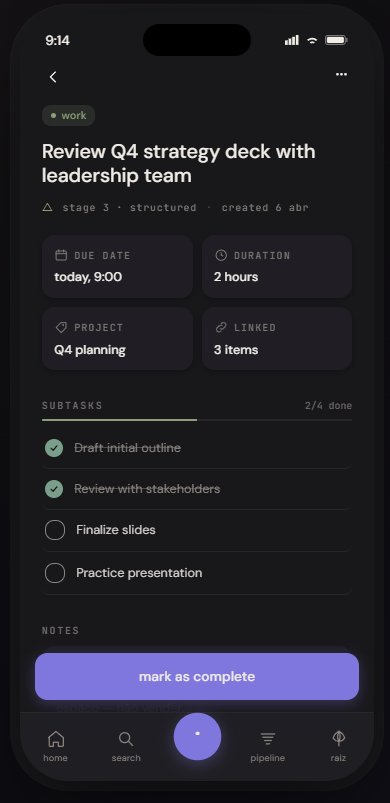
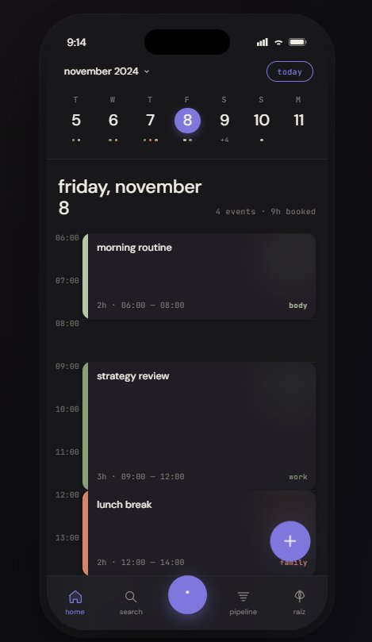
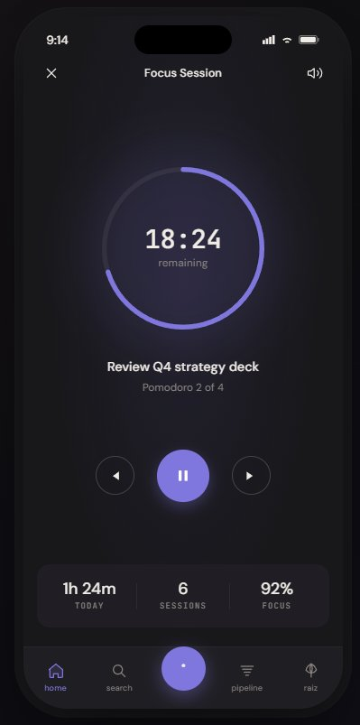
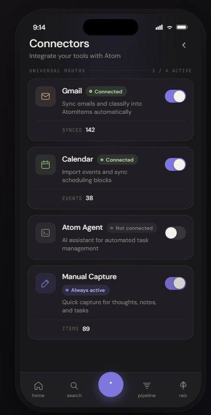
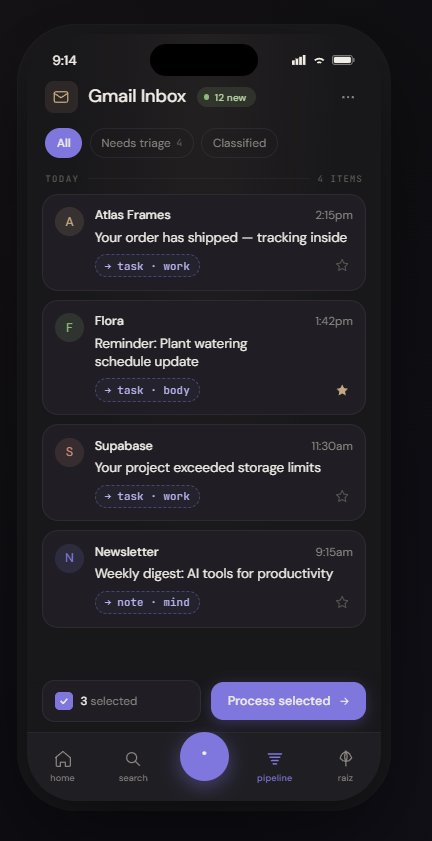
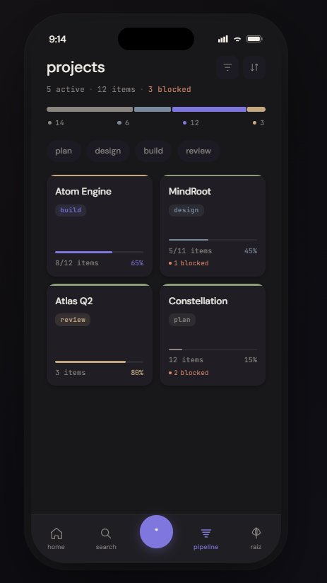
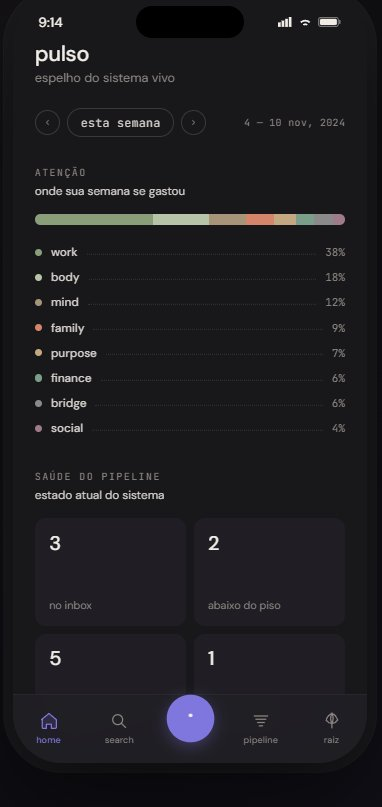
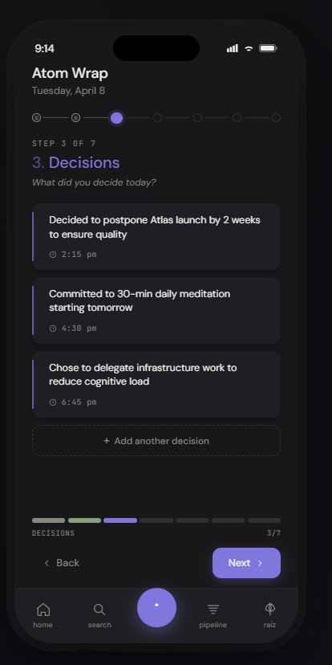
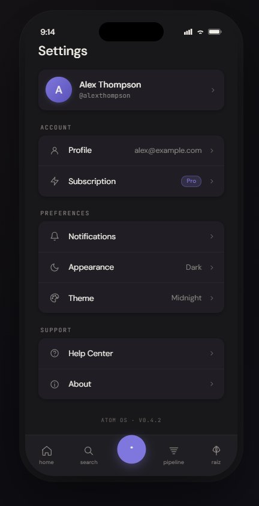
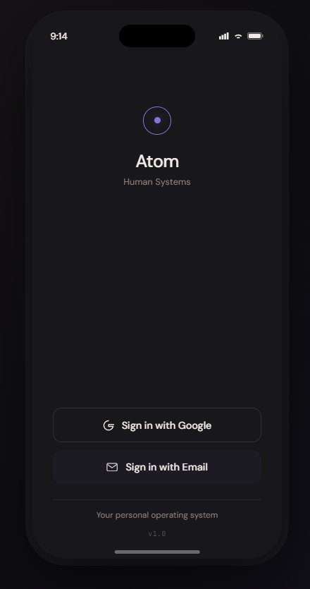
| pipeline | Side band em cor de módulo (não stage). Items precisam mostrar chip de módulo (não só source pill). Strings PT-BR. |
| raiz | Bug "communicat" cortado: font-size 13px + line-clamp 2 nos card labels. |
| focus | Remover "92% FOCUS" stat (gamification). Item em foco precisa module chip + geometry symbol. PT-BR. |
| AI classification pills com cor de módulo (work/body/mind), não accent uniforme. Cards com side band 8px. | |
| projects | Top borders nos módulos certos (Atlas Q2 e Constellation são work verde). StageBar com 7 segmentos completos. |
| wrap | Tudo em PT-BR. 7 steps amarrados ao Genesis Part 3.4 (CRIADOS / MODIFICADOS / DECIDIDOS / CONEXÕES / SEMENTES / ALMA / PRÓXIMO). Header com pill "· crepúsculo". Decision cards com side band em cor de módulo. |
| settings | Strings PT-BR. Header lowercase "configurações". Footer "MindRoot v1.0" no lugar de "Atom OS V0.4.2". |
| sistêmico | Top border (container) vs side band (item) — manter dual semântico, registrar no design-system.md. Glifos custom da Raiz reutilizáveis em qualquer ícone de domínio. |